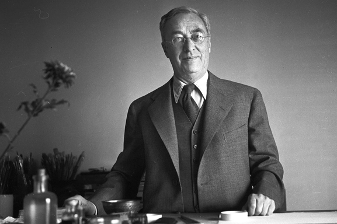

Personajes Principales del Bauhaus





Walter Gropius (1883-1969)
Arquitecto y profesor alemán, fundador de la Bauhaus. Sus hipótesis más destacadas fueron la economía expresiva y la adecuación a los medios productivos para todas las formas de diseño, una especie de unificación entre el arte y la ingeniería. Conceptos que se ven reflejados en sus edificaciones. Nació en Berlín en 1883 y estudió arquitectura en las universidades de Múnich y Berlín-Carlottenburg.
En colaboración con Adolph Meyer proyectó la fábrica Fagus en Alfeld (1910-1911) y el edificio de oficinas de la exposición del Werkbund en Colonia (1914), que le dieron a conocer en toda Europa. Después de la I Guerra Mundial dirigió dos escuelas de arte en Weimar, hasta que las transformó, en 1919, en la nueva Staatliches Bauhaus, donde introdujo una pedagogía que aunaba el estudio del arte con el de la tecnología. Cuando la escuela se trasladó a Dessau, Gropius proyectó los edificios que la acogerán, caracterizados por una exquisita simplicidad formal y por el empleo de grandes superficies de vidrio plano. Gropius abandonó su cargo como director de la Bauhaus en 1928 y continuó su carrera como arquitecto. Su oposición al partido nazi le obligó a abandonar Alemania en 1934, y después de pasar varios años en Gran Bretaña emigró a Estados Unidos para dar clases en la Universidad de Harvard (donde introdujo muchas de las ideas desarrolladas en la Bauhaus).También construyó el edificio de la Panam (1963) en Nueva York, en colaboración con Pietro Beluschi. Gropius murió el 5 de julio de 1969 en Boston.
Hannes Meyer (1889-1954)
Arquitecto suizo, nacido en 1889 en Basilea y fallecido en 1954 en Crocifisso di Savosa. Primero fue dibujante y a partir de 1909 comenzó a realizar edificaciones. Combinó sus estudios de arquitectura con sus primeros trabajos. Fue a clases de arquitectura en la universidad de Berlin, Technische Hochschule y a Kunstgewerbeschule.
Sus primeros proyectos se basaban en un movimiento reformador agrario y urbano (edificios aún clásicos). Entre 1916 y 1918 se desempeñó como gerente de departamento en las obras de Krupp en Essen. En 1919 diseñó las viviendas en forma de panal de la urbanización Freidorf cerca de Basilea, y en 1926, adoptó el racionalismo del movimiento moderno.
En 1927 fue profesor en la Bauhaus de Dessau, institución que dirigió entre 1928 y 1930 sucediendo al arquitecto alemán Walter Gropius. Despedido por su actitud crítica hacia esta escuela, partió hacia Moscú, donde dio clases de urbanismo hasta 1936; posteriormente trabajó en Suiza y, de 1939 a 1949, en México (dio clases en Escuela Superior de Ingeniería y Arquitectura (ESIA)). Sus planes urbanísticos no fueron aceptados nunca y pocos de sus proyectos arquitectónicos fueron llevados a cabo.
La obra más famosa es el palacio de las Naciones de Ginebra (1926-1927) y construyó la Bundesschule des Allgemeinen Deutschen Gewerkschaftsbundes.
Casado en 1917 con Luise Bianca Nathalie Herkert, tuvo dos hijas. Divorcio en 1936, al año siguiente se casó Lena Bergner, tuvo dos hijos. De sus relaciones con su secretaria Margaret Mengel, tuvo un hijo. Hannes Meyer falleció en 1954 en Suiza.
Ludwig Mies van der Rohe (1886-1969)
Arquitecto alemán. Su primer oficio fue de cantero, luego se mudo a Berlín donde trabajó en el estudio de Bruno Paul y, de 1908 a 1911, en el de Peter Behrens. Orientado hacia la arquitectura neoclásica pero, después de un viaje a los Países Bajos en 1912, sus intereses cambiaron.
Tras la Primera Guerra Mundial, se adhirió a diversos movimientos de vanguardia (Novembergruppe, De Stijl) y empezó a realizar proyectos revolucionarios, ej: un edificio de oficinas de la Friedrichstrasse de Berlín. Publico la revista G, en 1926 llevó a cabo la casa Wolf en Guben, la casa Hermann Lange en Krefeld, el monumento a Karl Liebknecht y Rosa Luxemburgo.
Convertido en un arquitecto de prestigio, empezó a recibir encargos como por ejemplo: un complejo experimental de viviendas para la Exposición de Stuttgart de 1927 (el Weissenhof Siedlung) y el pabellón de Alemania para la Exposición Internacional de Barcelona.
Suya es la famosa máxima: “menos es más”. Van der Rohe fue el tercer director de la Bauhaus, en el momento más complicado de la escuela (de 1930 a 1933). Se esforzó por mantener la Bauhaus al margen de la política. Sin embargo, el partido nazi acabó cerrando el centro en 1933.
Obligado a emigrar a Estados Unidos, nombrado director de la facultad de arquitectura del Illinois Technology Institute de Chicago (1938), genero fama por todo Estados Unidos.Trabajó fundamentalmente en la capital de Illinois.
1958-1959 Seagram Building de Nueva York y la Neue Nationalgalerie de Berlín (1962-1968).
Wassily Kandinsky (1866-1944)
Pintor de origen ruso, arte abstracto. A los treinta años, Kandinsky abandonó la docencia y fue a estudiar pintura a Munich. Su interés por el color se ve desde el comienzo de su carrera, en sus primeras pinturas hay influencia del postimpresionismo, el fauvismo y el Jugendstil alemán.
1902 - 1907 Kandinsky realizó viajes a Francia, Países Bajos, Túnez, Italia y Rusia. Se instaló en Murnau, donde pintó paisajes alpinos entre los años 1908 y 1910. Se dio cuenta de que la representación del objeto en sus pinturas era perjudicial y que la belleza estaba en la riqueza cromática y la simplificación formal. 1910, definitivo la abstracción.
1910 - 1914 Kandinsky pintó en tres categorías: las impresiones, inspiradas en la naturaleza; las improvisaciones, emociones interiores; y las composiciones, que aunaban lo intuitivo con el más exigente rigor compositivo.
Primera Guerra Mundial, Kandinsky volvió a Moscú; allí trabajo en el marco del Departamento de Bellas Artes del Comisariado Popular de la Educación. En 1917 se casó con Nina Andreievsky, y cuatro años más tarde se trasladó con ella a Alemania para incorporarse a la Bauhaus en la primera etapa de Weimar, como profesor hasta poco antes de su disolución. Escribió manifiestos y publicó el libro Punto y línea sobre el plano.Según él, cada forma y cada color representaban diferentes emociones o conceptos: el círculo era la armonía, la espiritualidad; el triángulo representa agresividad y el cuadrado, paz y calma. Clausurada la Bauhaus, el pintor se instaló en Francia.
Herbert Bayer (1900-1985)
Diseñador gráfico y pintor austríaco. 1919 - 1920 fue aprendiz en el estudio del diseñador Georg Schmidtthammer, en Linz, donde realizó sus primeros trabajos tipográficos. En 1921 trabajó en el taller del diseñador Emanuel Margol en Darmstald.
Estudió en la Bauhaus entre 1921-1923 y de 1924-1925. Asistió al taller de pintura mural con Schlemmer y Kandinsky. Profesor en Bauhaus durante 1925 - 1928. Director del taller de impresión y publicidad, taller de tipografía y diseño publicitario. Diseños impresos en la escuela. Fue director de la Bauhaus de 1928 - 1930. En 1928 dirigió la agencia publicitaria Studio Dorland.
Fue el diseñador de publicidad más innovador de la Bauhaus, su trabajo se destaca por la temprana introducción de la fotografía en los años 20. En los Estados Unidos pudo ampliar su actividad al diseño del medio ambiente.
Se dedicó a la pintura y la fotografía. Emigró a EE.UU. en 1938, mismo año que organiza la exposición y catálogo Bauhaus 1919-1918 en el Museum of Modern Art. Trabajó en Nueva York como diseñador gráfico. En 1946 realizó diseños en el Centro cultural Aspen/Colorado, con trabajos de pintura, diseño gráfico, arquitectura y ordenamiento paisajístico.
De 1946 - 1956 fue consejero artístico de la Container Corporaton of America y desde 1966 de la Atlantic Richfield Company. En 1968 realizó una exposición y catálogo “50 años Bauhaus” en Stuttgart. En 1975 se trasladó a Montecito, California. Murió en Santa Bárbara.
Láslo Moholy-Nagy (1895-1946)
Artista húngaro. Estudió derecho y se unió al círculo poético de Endre Ady. Quedo herido en la Primera Guerra Mundial y, en el proceso de su recuperación, realizó los primeros dibujos de escenas bélicas. En 1918 decidió dedicarse por completo al arte. Se trasladó a Berlín, y entre 1923 y 1929 fue el profesor del taller de metales de la Bauhaus, así como director de una colección de libros editada por la institución, llamados “los Bauhausbücher”. Desarrolló un arte no figurativo y construyó sus obras a partir de elementos puramente visuales: color, textura, luz y equilibrio de las formas. Desarrolló proyectos en otros campos, entre ellos escenografías y vestuarios teatrales y diseño de exposiciones. En 1935 se fue a Londres, luego se escapó de los Nazis. En 1937 fue director en Chicago de la New Bauhaus (más tarde School of Design), basada en el modelo de la escuela alemana y en la que continuaría su importante labor pedagógica.
Lilly Reich (1885-1947)
Nació en Berlín, y comenzó su carrera profesional como diseñadora de moda, diseño de arquitectura, mobiliario y decoración de interiores.
En 1908 trabajó en Viena y diseñó sillas como la Kubus, la Cabinet, la Koller o la Broncia. En 1914 abrió su propio estudio. Se convirtió en la primera mujer directora de la Deutsche Werkbund, planificando muchas de las exposiciones con los ideales modernos del momento.
conoció a Mies Van der Rohe y se trasladó a Berlín con él, convirtiéndose en su compañera personal y profesional durante 13 años. Colaboró con Mies en el diseño del Pabellón de Barcelona y de la Casa Tugendhat, a partir de las cuales surgieron los diseños de las sillas Barcelona y Brno. Participó en la Bauhaus como profesora de interiorismo, decoración, perspectiva y geometría descriptiva, hasta finales de 1930. Sus talleres fueron cerrados por los nazis.
Como arquitecta de interiores creó algunos de los espacios de mayor calidad de la historia de la arquitectura del siglo XX.
Reich permaneció en Alemania hasta su fallecimiento en 1947.
Gunta Stölzl (1897-1983)
Diseñadora textil y tejedora alemana. Estudió en la Escuela de Artes Decorativas de Munich de 1914 - 1916, dejó sus estudios para ayudar en la Cruz Roja durante la Primera Guerra Mundial.
En 1919 realizó el curso de la Bauhaus y en 1920 ingresó como aprendiz en el taller textil. En Zurich organizó junto a Itten los talleres textiles Ontos. Tras el traslado de la escuela de la Bauhaus de Weimar a Dessau en 1925, Stölzl se convirtió en maestra del taller textil, llegando a ser directora del mismo en 1927 durante 4 años. Le piden que no enseñe más por su matrimonio con un arquitecto israelí, en 1931.
Fundó su propia empresa de tejidos manuales en Suiza en colaboración con otros antiguos alumnos de la Bauhaus. Miembro de la Swiss Werkbund y de la Sociedad de Pintoras, Escultoras y Tejedoras suizas. Recibió el Diploma Conmemorativo de la Exposición Mundial celebrada en París.
Trabajó para el Museo Germánico Nacional y colaboró con destacados arquitectos. Falleció en Küsnacht, Zurich en 1983 a la edad de 86 años.